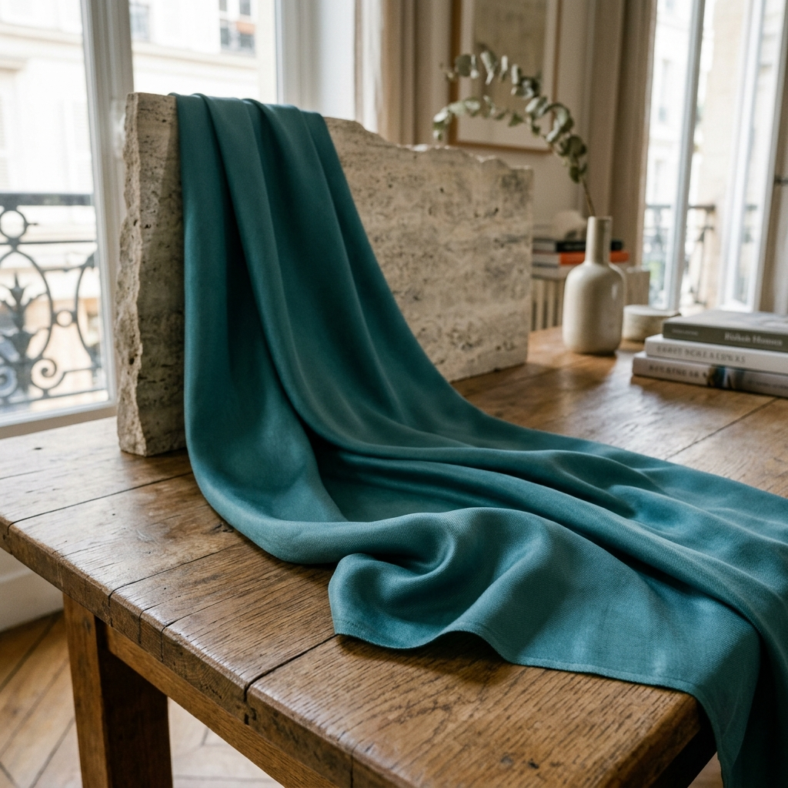
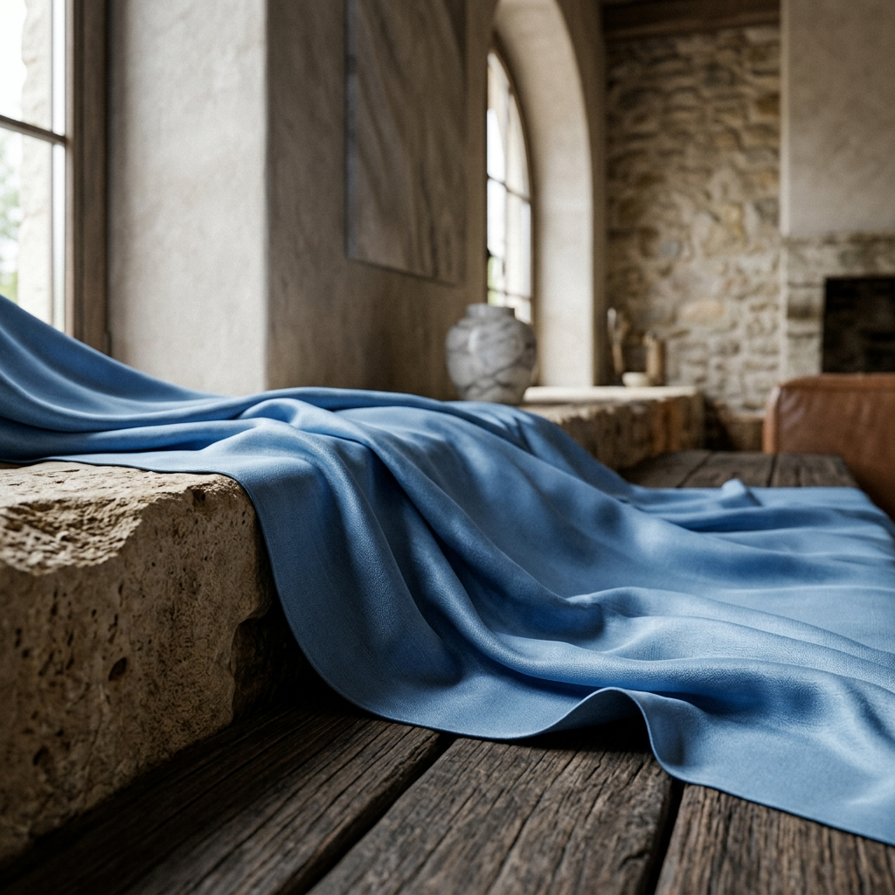

Fabric First.
We obsess over the fiber so you can focus on the moment.
Where Nature Meets the Needle.
Every Center Stage piece begins with a choice of fiber, and that choice is never arbitrary. We work exclusively with natural-origin and bio-derived materials, thoughtfully selected from nature for a softer hand feel, breathable comfort, and an elevated everyday experience.
"Thoughtfully selected from nature-derived sources for a softer hand feel, breathable comfort, and an elevated everyday experience."
Bio-based and plant-derived, sourced responsibly from sustainable origins.
Inherent properties that keep fabric fresher, longer. Wash after wear.
Retains shape and fit wash after wash. No surprises after laundry day.

The Natural-Origin Standard.
Our primary fabric is a refined natural-origin blend, a bio-regenerative material sourced with a focus on environmental responsibility. The result is a fiber that is naturally soft, breathable, and gentle on the skin.
Available in both knitted and woven constructions, each fabric is selected for its GSM, composition, and suitability to each silhouette, so the fabric always serves the garment, never fights it.
Knit & Woven
Both constructions: knits for movement and stretch, wovens for structure and drape, each chosen to suit the specific silhouette.
GSM Engineered
Each fabric is weight-tested for its role: lighter GSM for breathable tops, heavier for structured midi silhouettes.
Skin-Safe & Gentle
Naturally hypoallergenic properties make our fabrics suitable for sensitive skin, soft against the body all day.
Feel the Difference.
Natural-origin fibers. Designed to move with you.
Shop Center Stage